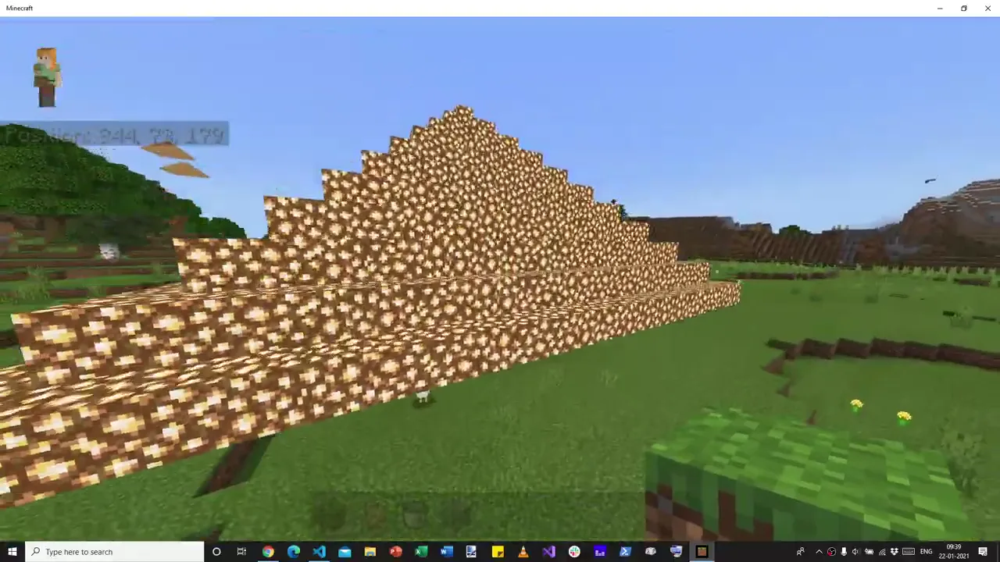
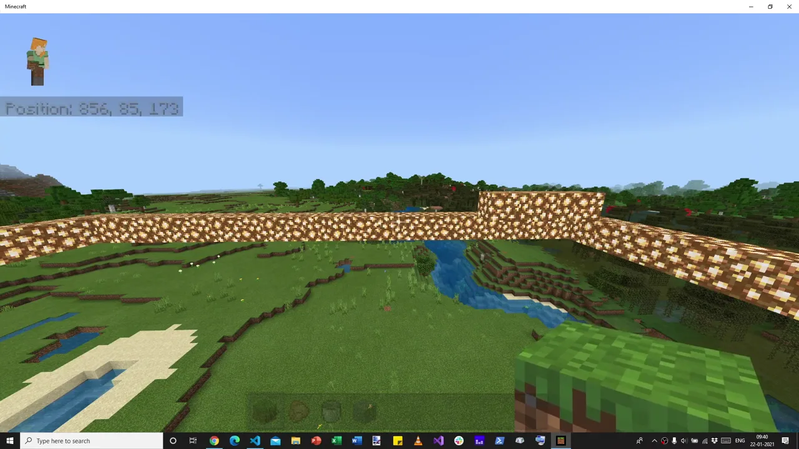
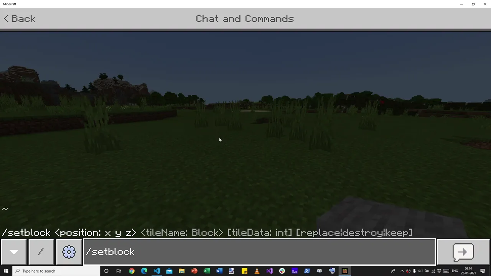
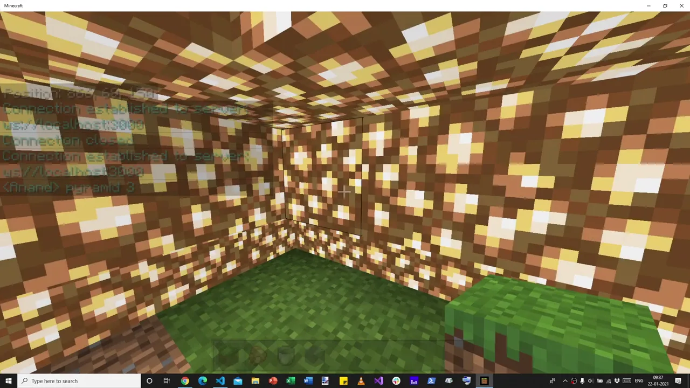
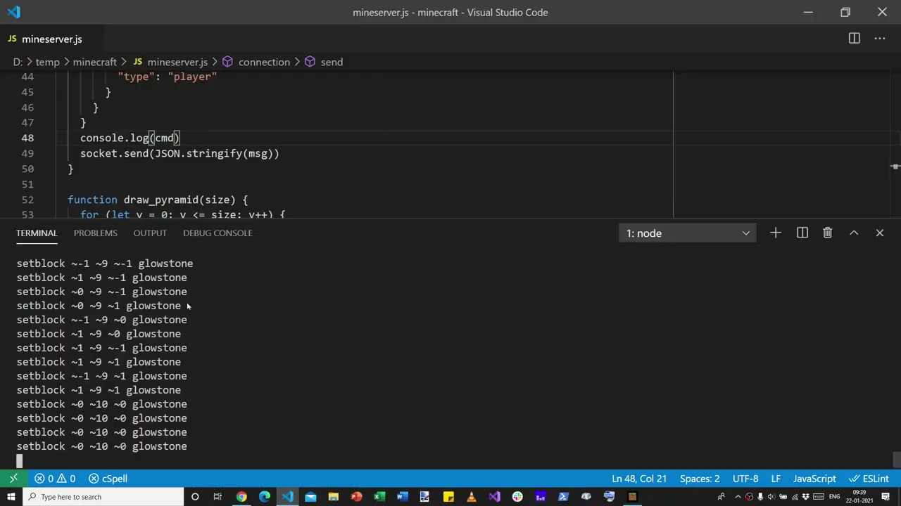
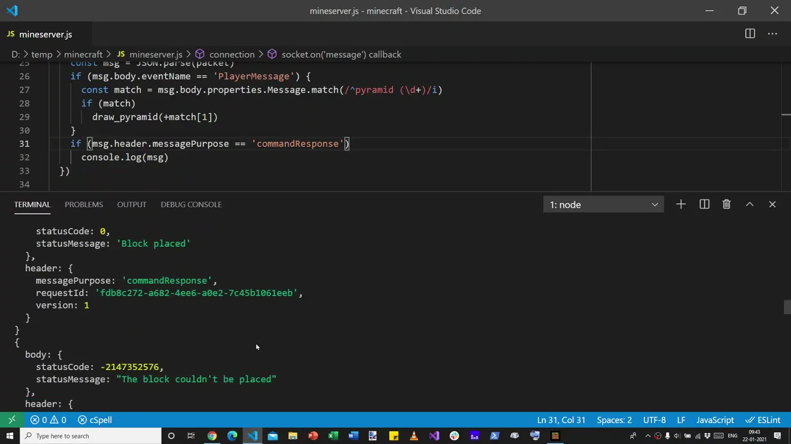
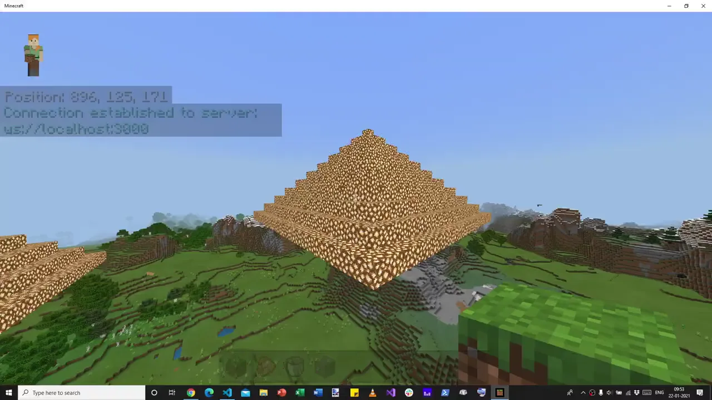
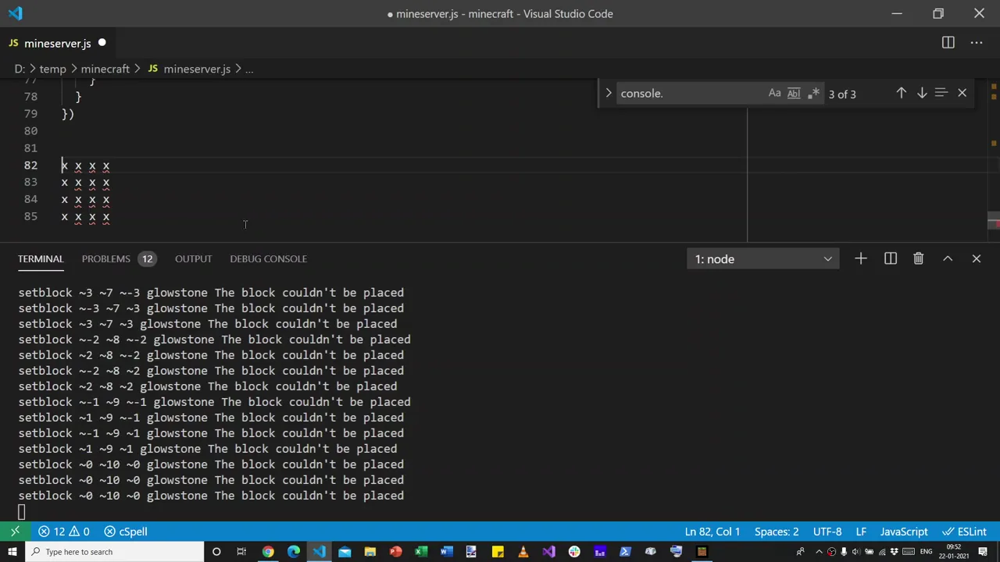

![Nine-panel comic titled ‘The Minecraft pyramid that taught backpressure’, subtitle ‘He removed a log message. The pyramid stopped growing.’ Panel 1: a worried programmer at a laptop says ‘Anand removed one console.log… and Minecraft built less. How can a faster program fail?’ beside an expected complete glowstone pyramid and an actual half-built one. 2: a single grass block placed with /setblock. 3: mineserver.js and /connect localhost:3000 link Minecraft (Bedrock) and a JavaScript server over a WebSocket. 4: a player says ‘Hello!’ and a JSON message arrives. 5: chat lines ‘pyramid 3’ and ‘pyramid 5’ trigger drawPyramid. 6: ‘It works!’ inside a glowstone pyramid, then a bigger one. 7: the console.log is crossed out, setblock commands stream out ‘Too fast!’ and the pyramid stops finishing; a sign reads ‘Logging = accidental brake pedal’. 8: a sendQueue, request IDs, an awaitedQueue and Minecraft returning command responses. 9: ‘Flow control turns a fragile hack into a reliable builder!’ beside a completed pyramid at sunset. Footer: ‘The program didn't need more speed. It needed flow control.’](comic-page.avif)
The faster program built less
The first pyramid below took a few lines of JavaScript and about a second. Anand had typed pyramid 10 into Minecraft's chat window, and a program on his laptop answered by placing several hundred glowstone blocks around him. He flew out to admire it: “You can see that it's actually created a huge, massive pyramid out here.” 21:40
Then he made one small edit. “I'm going to remove this console.log, restart the server, and see if I can show you one other thing.” 22:00 The line he deleted did nothing but print each command to his terminal as it went out. It placed no blocks. It changed no data. Removing it could only make the program faster.
He moved to a fresh patch of grass, typed pyramid 10 again, and turned to look.
Same command, same code, minus one log line. What did Minecraft build?
Pick one to reveal the frame from the recording.


21:48 · with the logconsole.log. Pyramid 10, eleven layers, complete. 21:42

22:47 · log deletedThe faster program built a single ring of glowstone, one block high, with a few blocks of a second layer on top. Everything above it was simply missing. Anand noticed at once:
“When I removed the console.log, it didn't really print the— it didn't put the whole pyramid out here.”
Anand · 22:14
A print statement had been holding up a pyramid. To see how, it helps to go back to the start of the video, where there is no pyramid at all. Just one block of grass.
Quotes in large serif type are Anand's spoken words, checked against the recording's audio. Each time plays that moment in the video beside the story (a mini-player on phones); Focus video enlarges the same player without restarting it. Code blocks are excerpts from the tutorial's repository, which match what he typed on screen. Notes marked Our reading are this page's analysis, not things said in the video.
One block of grass
The tutorial opens with an unremarkable fact: “Minecraft has an option to connect to a web server when we are in a game, and specifically a WebSocket server.” 00:01 A WebSocket is a connection that stays open in both directions: either side can send a message at any time, without waiting to be asked. That is the whole trick. Whatever a player can type, a program on the other end of that socket can type too.
So Anand starts with something a player would type. He opens the chat window and enters /setblock to place a grass block one step away along the x-axis. He gets it slightly wrong first. A block appears somewhere, he has “no idea where”, and he realises he wrote absolute coordinates for y and z. The fix is a tilde: setblock ~1 ~0 ~0 grass 01:09. Remember the tilde. It will go missing again later.


00:34/setblock command, typed by hand. Every block in every pyramid on this page is one of these. 00:19Then he switches to code. He installs ws, “a fairly popular WebSocket library”, and writes a server that does almost nothing: it listens on port 3000 and prints a word when something connects. Port 3000, he says, but “it could be literally any port.” 02:51
const WebSocket = require('ws') const wss = new WebSocket.Server({ port: 3000 }) // On Minecraft, when you type "/connect localhost:3000" it creates a connection wss.on('connection', socket => { console.log('Connected') })
uuid for later and prints a “Ready” hint). The version on screen at 03:34 is the same shape.Back in the game he types /connect localhost:3000. Minecraft replies in its chat: Connection established to server: ws://localhost:3000. In the terminal, Node prints Connected 04:10. Two programs that know nothing about each other are now on speaking terms.
The game talks back
A connection is only useful if something travels over it. Anand's next step turns the server from a listener into an observer of the world: If the player types something in chat, “we want to listen to it.” 05:18 The server sends Minecraft a subscribe request for an event called PlayerMessage. From then on, anything typed in chat is forwarded to Node as a JSON message.
socket.send(JSON.stringify({
"header": {
"version": 1, // Use version 1 message protocol
"requestId": uuid.v4(), // A unique ID for the request
"messageType": "commandRequest", // This is a request ...
"messagePurpose": "subscribe" // ... to subscribe to ...
},
"body": {
"eventName": "PlayerMessage" // ... all player messages.
},
}))
header that says what kind of message it is, and a body with the payload. Typed on screen from 05:43.He types hello into the game. The terminal fills with a huge object. Along with the word itself, Minecraft reports the biome he is standing in, his client ID, that he is on Windows 10, and his game build: “I'm on build 1.16.201, on platform seven, which I presume is Bedrock, which is what I'm on.” 09:56
Node → Minecraft: subscribe
- messagePurpose
- "subscribe"
- requestId
- a fresh uuid.v4()
- body.eventName
- "PlayerMessage"
Minecraft → Node: event
- messagePurpose
- "event"
- requestId
- "00000000-0000-…-000000000000"
- body.properties
- Message: "hello", Build: "1.16.201", Biome: 1, …
Field names from mineserver2.js and the terminal output visible at 09:35. An event carries an all-zero request ID: it is not a reply to anything you asked.
None of this is in an official manual. Anand says so plainly:
“These messages are in the Minecraft WebSocket protocol, which is actually … undocumented … So, this is largely about trial and error.”
Anand · 10:14
Keep two details from this scene. First, every request carries a unique requestId, generated by the uuid package. Right now it looks like ceremony. Twenty minutes later it is the only thing that lets Node match an answer to a question. Second, the protocol is a conversation: Minecraft does not just obey, it reports back. For the next quarter of an hour, the program will ignore everything Minecraft says except chat.
Geometry in a chat box
Now the payoff Anand has been heading towards: type a sentence, get a building. When a PlayerMessage arrives, a regular expression checks whether it reads pyramid followed by a number 11:07. If so, a function draws a pyramid of that size around the player.
The drawing is two loops. The outer loop climbs from the ground, y = 0, to the top. At each height the square shrinks by one: side = size - y. The inner loop walks along that square, and for each step sends four setblock commands, one for each edge 14:10.
function draw_pyramid(size) { // y is the height of the pyramid. Start with y=0, and keep building up for (let y = 0; y < size + 1; y++) { let side = size - y; for (let x = -side; x < side + 1; x++) { send(`setblock ~${x} ~${y} ~${-side} glowstone`) send(`setblock ~${x} ~${y} ~${+side} glowstone`) send(`setblock ~${-side} ~${y} ~${x} glowstone`) send(`setblock ~${+side} ~${y} ~${x} glowstone`) } } }
send() wraps one command in a JSON envelope with its own uuid.v4() request ID and fires it down the socket at once. Nothing waits for anything.Notice what the loop draws. Not a solid pyramid: a hollow shell of square rings, one per layer, stacked like a ziggurat. And because the rows and the columns of each ring both include the corners, every corner is sent twice. Neither fact matters yet. Both will.
How many commands is a pyramid?
Seen from above. Each ring is one layer of the hollow shell: the outer ring is the ground floor, the centre block is the peak. Commands = 4 × (size + 1)²; distinct blocks = 4 × size × (size + 1) + 1; repeats = 4 per ring plus 3 at the peak.
Computed from the loop in mineserver3.js, not from Minecraft. Drag the slider (or use the arrow keys) and watch the count grow with the square of the size: double the pyramid, roughly quadruple the requests. Turn on the first-100 outline at size 10 and keep it in mind.
The first run fails twice, in two instructive ways. The game drops the connection because Node threw an error: on screen, the call reads draw_pyraid, a missing letter 18:47. Fixed, he types pyramid 3 again and “it didn't do a single thing. We should have been surrounded by a glowstone pyramid.” 19:05
So he does what any programmer does. “Let's do a console.log to see what commands we are actually sending.” 19:13 The printout shows the bug at once: the z-coordinate has no tilde, so every block is being placed at absolute z, somewhere far away. Two tildes later, the commands are right.
That debugging line, added at 19:13 to find a missing tilde, is the same console.log he deletes at 22:00. For the next three minutes, every pyramid he builds is built with it.
Standing inside your own code
He types pyramid 3 and the screen turns gold. “That has created a glowstone pyramid around us of size three.” 20:02 He is inside it: the program built the walls around the spot where he stood.


20:05 · pyramid 3What follows is the most human minute of the recording. Anand does not move on. “Let's break out of it,” he says, and punches his way out of his own creation 20:09. He points out that it started at y = 0 and climbed to the top. He accidentally breaks some grass and patches it by hand, though he could have used a command: he finds it satisfying to do this manually 20:51.
That is the quiet argument of the whole tutorial. Code is not a replacement for play. It is a way to make bigger things to play in. pyramid 5 follows. Then, after a typo the chat log keeps forever (pyramid 1-), pyramid 10, in mid-air 21:00. Built with the log line still in place, all 484 commands land: the complete pyramid at the top of this page.
“Well, that was a very quick introduction into how you can use Minecraft to send messages,” he says 21:50. It sounds like an ending. Then he deletes the log line.
The log line was a brake
Here is the line he removed, as it sat on screen a second before he deleted it: line 48, inside send(), just above the call that actually ships each command to Minecraft.


22:00 · line 48~0 ~10 ~0, sent four times. 22:00function send(cmd) { const msg = { header: { …, requestId: uuid.v4() }, body: { commandLine: cmd, … } } console.log(cmd) socket.send(JSON.stringify(msg)) }
mineserver3.js ships without the log line. The header and body are abbreviated here.Anand's diagnosis came within seconds, and it is the heart of the video:
“The reason is that Minecraft isn't as fast as Node, and it only accepts 100 messages at a time.”
Anand · 22:21
Printing to a terminal is slow, as computer work goes. With the log in place, each pass through the loop paused to write a line, and that pause gave Minecraft breathing space to work through the commands as they arrived 22:29. Without it, the loops fired all 484 commands in a burst.
“Once it sent a 100 of these, it got overloaded and choked.”
Anand · 22:40
The loop sends the bottom layer first. For size 10 that layer is 84 commands (21 steps × 4 edges). If Minecraft accepts only the first 100, it builds the whole ground ring plus 16 commands' worth of the second layer, a few blocks near each corner, and nothing above. That matches the 22:47 frame: one full ring, a raised section, nothing higher. Try it with the outline toggle in the counter above.
Programmers have a name for a bug that vanishes when you add print statements: a Heisenbug. This is its mirror image. The program only worked because it was being watched. The debugging line, added at 19:13 to look for a missing tilde, had quietly become load-bearing.
The slow program was correct by accident. The fast program was wrong on purpose: it did exactly what it was told, faster than anyone could listen.
Logging was never the fix. It was an uncontrolled throttle whose speed depended on how fast a terminal could scroll. Change the laptop, redirect the output to a file, or send a bigger pyramid, and the accident stops protecting you.
Listening to the replies
The obvious fix would be to put the log back, or to add a sleep. Anand does neither. He asks a better question: “Why don't we now listen to more of Minecraft's responses and see what they have to say?” 22:55
For every command it receives, Minecraft sends back a commandResponse carrying the same requestId and a statusCode: zero for success, negative for failure. The program had been receiving these all along and throwing them away. After one more typo (command for commandResponse, 24:03), the terminal fills with them.


24:30Block placed, then The block couldn't be placed. 24:23He scrolls up: Block placed, block placed, block placed, then, after a point, failures. He also names the error that marks a true overload: “too many commands have been requested, and wait for one to be done.” 24:54
The written tutorial lists the codes separately blog: The block couldn't be placed (−2147352576) means the same block was already there; Too many commands have been requested (−2147418109) is the overload. At 24:23 he was rebuilding pyramid 10 in a spot where an earlier attempt had already left blocks, so some of the failures on screen there were probably collisions, not overload. The distinction comes back in the final scene.
A hundred in flight
Now the plan is simple enough to say in one breath:
“If there are more than 100 messages, we are going to put it into a queue and, yeah, just send at most 100 at a time.”
Anand · 25:04
He builds it with two containers. sendQueue holds commands that have not gone out yet. awaitedQueue holds commands that have gone out but have not been answered, filed under their requestId. send() no longer sends anything: it just pushes onto sendQueue 28:22. The real sending happens in the message handler, every time Minecraft says anything at all.
// If we get a command response, act on it if (msg.header.messagePurpose == 'commandResponse') { if (msg.header.requestId in awaitedQueue) { if (msg.body.statusCode < 0) console.log(awaitedQueue[msg.header.requestId].body.commandLine, msg.body.statusMessage) delete awaitedQueue[msg.header.requestId] // a reply frees a slot } } // We can send new commands from the sendQueue -- up to a maximum of 100. let count = Math.min(100 - Object.keys(awaitedQueue).length, sendQueue.length) for (let i = 0; i < count; i++) { let command = sendQueue.shift() socket.send(JSON.stringify(command)) awaitedQueue[command.header.requestId] = command }
Math.min are in the other order 31:00.Read it as a rule of conversation: never have more than 100 questions unanswered. Each reply, success or failure, crosses one question off and lets one more out. There is no timer and no sleep. Minecraft's own answers set the pace. This is what engineers call backpressure: the slow side pushes back on the fast side, so work waits where it is cheap to wait, in a list in Node's memory, instead of being thrown away at the door.
Why 100? Not because a standard says so. WebSocket itself sets no such limit. It is the number Anand observed for this undocumented Minecraft interface in early 2021; his written tutorial puts it as “Minecraft only allows up to 100 messages in its queue.” And note what it bounds: requests in flight, not requests per second. Run the three versions side by side to feel the difference.
Three ways to send pyramid 10
Pick a strategy and press Run.
How the model works: Node's loops produce 484 commands. Minecraft is modelled as a desk that holds at most 100 unanswered commands and finishes two per tick; a command arriving at a full desk is refused. With the log line, Node can produce only one command per tick (Anand's diagnosis, not a measurement). The queue version follows mineserver5.js: send up to 100, then one more for each reply. Speeds are illustrative; the 100 is the bound Anand observed in 2021.
Notice what the queue version does that the log version cannot: it is both correct and fast. It runs as fast as Minecraft can go, and no faster. The logging hack ran at the speed of a scrolling terminal, which happened to be slow enough. Flow control replaces luck with a contract.
Forty-odd honest errors
He flies somewhere new and types pyramid 10 31:27. The pyramid builds, larger than the broken one, and yet the terminal still prints lines. For a moment it looks like failure. “That's odd,” he says, then sees why: the program is now printing only errors, with their messages. To be sure, he moves again and builds one more 32:00.


33:36 · queue of 100The pyramid is whole. The remaining errors all say The block couldn't be placed, and Anand explains them by typing a little square of x's into his editor 32:23. His loop places the top row and the bottom row, then the left column and the right column. The corners belong to both.
“Because I'm saying place this twice, both as part of the row as well as part of the column, Minecraft's saying, I can't place that glowstone, because it's already there.”
Anand · 32:57


32:48~3 ~7 ~-3, ~-2 ~8 ~-2, ~0 ~10 ~0: x and z at ±side. 32:23He predicts “roughly 40, or, well, close to 40”, counts, and finds “around 40-odd messages” 33:07. The loop's arithmetic says exactly 43: four repeated corners on each of the ten rings, plus three repeats of the single peak block. These are not overload. They are a geometry bug reported honestly, and the program can tell them apart now only because it is finally listening.
“The queue fixed it” means the pyramid is no longer truncated by flooding Minecraft. It does not mean every command succeeds. Correct pacing and correct work are different properties, and you need the replies to check either.
Fast output isn't working output
The recording ends on possibility, not on bugs:
“Now, we can pretty much get Minecraft to, well, take any request from a player, do anything on the player's behalf, and, well, create more interesting worlds.”
Anand · 33:28
But the lesson most worth carrying out of the game is the one he stumbled into at minute 22. A producer that is faster than its consumer is not fast. It is broken in a way that looks like success until something downstream quietly drops the excess. The symptom was missing glowstone. The cause was a conversation in which one side never waited for the other.
The shape recurs anywhere one program asks another to do work: a script calling a rate-limited API, a browser opening too many connections, a job queue feeding a database, an AI agent firing tool calls at a service. The tutorial did not discuss any of these; this is a 2026 reading of a 2021 video. But the remedy is the same three moves Anand made in eight minutes: tag every request, listen to every reply, and cap what is in flight.
This page documents what worked on Minecraft Bedrock 1.16 in January 2021, through an undocumented interface. Later Bedrock versions changed its behaviour (the tutorial's comments record new connection errors by 1.18), and we have not verified that /connect works in today's Minecraft. The original setup also involved switching off encrypted WebSockets, which we do not recommend, and a server listening on a network port, which should never be exposed beyond your own machine. Everything interactive on this page is a simulation that runs in your browser. For current, documented ways to script Minecraft, start with Microsoft's creator documentation.
Four lessons from one glowstone pyramid
A log line can be load-bearing
Anything that changes timing changes behaviour. When removing a print statement breaks a program, the print was hiding a race or a flood. Find what it was slowing down.
The system runs at the slowest part's speed
Node could produce 484 commands in a blink. Minecraft could not take them. Sending faster than the receiver can work does not save time; it throws work away.
Cap what's in flight, and let replies pace you
A unique requestId, a waiting list, and “100 minus what's awaited” turned a fragile accident into a contract. No sleeps, no guesses: each answer releases the next question.
Read the replies to tell failures apart
“Too many commands” is a pacing problem. “Already there” is a geometry problem. Only a program that listens can tell which one it has.
What's on screen, what's said, what's ours
This page leans on four kinds of evidence: the recording itself, its transcript (machine-made in 2026; every quote above was re-checked against the audio), the tutorial's code, and the written tutorial, first published 20 January 2021 and last updated 2 February 2022.
| Claim | Evidence | Status |
|---|---|---|
Deleting console.log(cmd) left pyramid 10 unfinished | Frames at 22:00 and 22:47; 22:14 | Seen on screen |
| Minecraft “only accepts 100 messages at a time” | Said at 22:21; code caps in-flight requests at 100; blog: “up to 100 messages in its queue” | Observed, 2021 only |
| First 100 commands = the 84-command ground ring + 16 of layer two | Loop arithmetic from mineserver3.js, compared with the 22:47 frame | Our analysis |
| “Block couldn't be placed” means the block was already there; overload is a different error | Blog's list of error codes (−2147352576 vs −2147418109); 24:54 | Blog, possibly later edit |
| 43 corner repeats for pyramid 10 | “Around 40-odd messages” at 33:07; exact count from the loop | Consistent |
Bedrock build 1.16.201, Windows 10; ws 7.4.2 | Event properties at 09:56; npm output in the 04:08 frame | Seen on screen |
| Recorded the morning of 22 Jan 2021 | Terminal timestamps (“Fri Jan 22 09:17 AM”) and the taskbar clock | Seen on screen |
| Speeds in the simulator | Illustrative; only the cap of 100 comes from the video | Model, not data |
Related, but not this recording: the companion Python version of the tutorial and a short 2025 glowstone-pyramid demo. The same repository also holds the intermediate mineserver4.js that only prints responses.